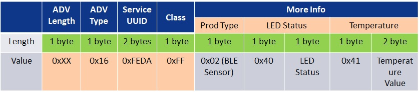

# WBZ451 BLE Sensor DEMO : Protocol Exchange
# WBZ451 BLE Sensor DEMO : Protocol Exchange
Protocol Exchange
The communication protocol exchange between mobile app (BLE central) and WBZ451 module (BLE peripheral) is explained here.
1. BLE Sensor Data in Advertising Beacon:

- Advertisement Data:
- Service UUID: 16-bit Service UUID, 0xFEDA is purchased by Microchip from Bluetooth SIG.
- BLE Sensor data: 0x40+Light ON/Off status (1 Byte)+ 0x41+Temperature data (2 bytes)
- Scan Response Data:
- The device name is part of the scan response. Device name is set as “BLE_SENSOR_XXXX” (XXXX means the last two bytes of the device address).
2. Transparent Profile and Service (TRP/TRS):
Transparent Profile and Service (TRP/TRS) is the proprietary BLE service by microchip to establish data and control channel between BLE Central (Phone) and Peripheral (device).

- Transparent Profile (TRP) enables higher layer application to control and allow data exchange between TRP Client and Server devices
- Transparent Service (TRS) includes both Ctrl and Data Pipes which are custom 128-bit GATT characteristics.
- The Transparent Server shall be a GATT Server
-
The Transparent Client shall be a GATT Client
Definition of Transparent Service and Characteristics UUID’s
Characteristic Name UUID Properties TRS Service 49535343-FE7D-4AE5-8FA9-9FAFD205E455 TRS TxD- Tx Data to Client role (Data pipe) 49535343-1E4D-4BD9-BA61-23C647249616 Notify, Write TRS TxD - Client Characteristic Configuration Descriptor Read, Write TRS RxD- Rx Data from Client role (Data pipe) 49535343-8841-43F4-A8D4-ECBE34729BB3 Write, Write without response TRS Ctrl Pt - Command and Response (Ctrl pipe) 49535343-4C8A-39B3-2F49-511CFF073B7E Notify, Write, Write without response TRS Ctrl Pt - Client Characteristic Configuration descriptor Read, Write {:.table-striped}
3. BLE Sensor Application over Transparent Service Control Point (TRS Ctrl Pt):
BLE Sensor application uses TRS Control Point Characteristic of TRPS profile to exchange data between mobile phone and device.

The BLE Sensor application follows the below protocol format on TRS control point characteristic.
| Item | Opcode | Length | Sensor/Control ID | Payload |
|---|---|---|---|---|
| Size | 1 Byte | 1 Byte | 1 Byte | Variable |
The description of each element is as below:
- The Opcode: (0x8A) is fixed 1 byte in size and related to BLE Sensor/Control commands.
- Length: 1 byte in size (size of Sensor/Control ID + size of Payload)
- The Sensor/Control ID: 1 byte in size. It could be divided into Control request, Control response, Sensor notify data described in detail in following sections.
- The Sensor/control data and payload size depends on the Sensor/Control ID as listed in the below table.
BLE sensor application control and sensor command/response
| Control Cmd | Opcode | Control Request ID | Parameter | Parameter Length (Byte) | Control Response ID | Control Response Payload | Control Response Payload Length (Byte) | Description |
|---|---|---|---|---|---|---|---|---|
| RGB LED On/Off Set | 0x8A | 0x10 | On/Off | 1 | 0x20 | Status code | 1 | Switch On/Off the RGB LED with the default/last set color |
| RGB LED On/Off Get | 0x8A | 0x11 | 0x21 | Status code + On/Off status | 2 | Send the RGB LED on/off status | ||
| RGB Color Set | 0x8A | 0x12 | Color value (HSV) | 3 | 0x22 | Status code | 1 | Set RGB color value in HSV format |
| RGB Color Get | 0x8A | 0x13 | 0x23 | Status code + RGB color value | 4 | Send RGB color value in HSV format | ||
| Sensor Data | Sensor ID | Parameter | Parameter Length (Byte) | Description | ||||
| RGB LED On/Off status | 0x8A | 0x40 | On/Off status | 1 | RGB LED On/Off Status | |||
| Temperature data | 0x8A | 0x41 | Temperature sensor data | 2 | Temperature value in Celsius with 0.1 resolution. The MSB bit will be set when the negative temperature is reported |
3.1 Control Command Request and Response
The Control command request is used by mobile app to send the command to device. The control request channel is opened only after Client Characteristic Configuration Descriptor of TRS Ctrl Pt Characteristic notification is enabled; it is closed when such notification is disabled.
The format of Control command is an 8bit Opcode, an 8bit request ID followed by optional control payload.
Format of Control Command
| Item | Op Code | Length | Control Request ID | Control Payload |
|---|---|---|---|---|
| Size (Octet) | 1 | 1 | 1 | Variable |
The control response is used by the device to send feedback to mobile app. The format of Response is an 8bit Opcode, an 8bit response ID and response status followed by optional Response payload.
Format of Control Response Data
| Item | Op Code | Length | Control Response ID | Status | Control Response Payload |
|---|---|---|---|---|---|
| Size (Octet) | 1 | 1 | 1 | 1 | Variable |
Status code 0x00 means successful execution of control command. Any status code other than 0x00 means error code, as shown in below Table. An error status does not have optional control Response payload.
Definition of Status Code
| Status Code | Definition | Description |
|---|---|---|
| 0x00 | Success | Response for successful operation |
| 0x01 | Op Code Not Supported | Response if unsupported Op Code is received |
| 0x02 | Invalid Parameter | Response if Parameter received does not meet the requirements of the service. |
| 0x03 | Operation Fail | Response for fail operation |
| 0x04-0xFF | Reserved for Future use |
3.2 Sensor Notify Data
The Sensor data is sent to mobile app periodically by WBZ451 device. The sensor data channel is opened only after Client Characteristic Configuration Descriptor of TRS Ctrl Pt notification is enabled; it is closed when such notification is disabled.
The format of sensor data is an 8bit Opcode, an 8bit Sensor ID followed by sensor data payload.
Format of Sensor Data
| Item | Op Code | Length | Sensor ID | Sensor Payload |
|---|---|---|---|---|
| Size (Octet) | 1 | 1 | 1 | Variable |